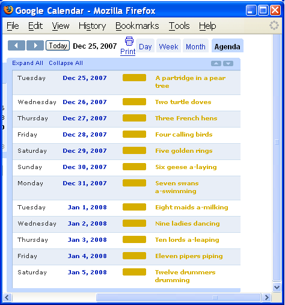

Is your true love forgetful? Well, here's a little reminder to him or her for your twelve days of gifts. [mod1a.pl]
Many things have a schedule of events or calendar of some kind. iCal (RFC 2445) is the standard for people to share calendars with one another, and Data::ICal provides perl with ability to both parse and generate calendar files.
Have event information or dates stored in a database or just listed in a file? Export them out into an iCalendar .ics file to be read by your favorite calendaring application: Sunbird, Google Calendar, Outlook, etc.
Now, let's take all of the Perl Advent entries to date, going back to 2000. First, we'll scrape the archive page with the script get_links.pl to create an AoH links.dat data file. Now we can create our calendar file with a Data::ICal script. [mod1b.pl]
The resulting file is perladvent.ics which can be loaded as a remote calendar in your favorite application, as in these screenshots of Thunderbird and Google Calendar.
Now you can "open the window" (on the calendar) each day by regenerating this year's (or really any year 2000-2007) events with a combination of the scraper and Data::ICal scripts mentioned above [mod1c.pl], or perhaps more sanely add some daily reminders generated by reminders.pl.
Using a calendaring application to maintain a personal or organization calendar? Want those events custom embedded in your web pages or application? Data::ICal can parse the calendar file and provide easy access to the event data, such as taking our perladvent.ics and creating perladvent.html. [mod1d.pl]
This allows the full leveraging of established calendaring applications for maintaining calendars, reducing much wheel-reinvention, leaving more time for milk & cookies.
This script generates twelve.ics, shown in the Google Calendar screenshot above.
1 use Data::ICal; 2 use Data::ICal::Entry::Event; 3 use Date::Calc qw/Add_Delta_Days/; 4 5 my $calendar = Data::ICal->new(); 6 $calendar->add_properties( 'X-WR-CALNAME' => 'The Twelve Days of Christmas' ); 7 8 my $song = ''; 9 while(my $line = <DATA>){ 10 $song = $line . $song; 11 chomp($line); 12 my $vevent = Data::ICal::Entry::Event->new(); 13 $vevent->add_properties( 14 summary => $line, 15 description => "On the 12th day of Christmas, my true love sent to me\n" . $song, 16 dtstart => sprintf( '%04d%02d%02d', Add_Delta_Days(2007,12,24,$.) ), 17 ); 18 $calendar->add_entry($vevent); 19 } 20 21 print $calendar->as_string; 22 23 __DATA__ 24 A partridge in a pear tree 25 Two turtle doves 26 Three French hens 27 Four calling birds 28 Five golden rings 29 Six geese a-laying 30 Seven swans a-swimming 31 Eight maids a-milking 32 Nine ladies dancing 33 Ten lords a-leaping 34 Eleven pipers piping 35 Twelve drummers drumming
This script generates perladvent.ics from an AoH data file.
1 use Data::ICal; 2 use Data::ICal::Entry::Event; 3 4 my $links_file = $ARGV[0] or die; 5 6 my $calendar = Data::ICal->new(); 7 $calendar->add_properties( 8 'X-WR-CALNAME' => 'Perl Advent Calendar', 9 'X-WR-CALDESC' => 'Perl Advent Calendar history - http://perladvent.pm.org/', 10 ); 11 12 my $links = do {local $/=undef; open FILE, '<', $links_file or die; my $VAR1; eval <FILE>}; 13 14 foreach my $row ( @$links ){ 15 my $vevent = Data::ICal::Entry::Event->new(); 16 $vevent->add_properties( 17 summary => $row->{modules}, 18 description => $row->{title}, 19 categories => 'Perl Advent Calendar', 20 dtstart => sprintf('%04d%02d%02d',$row->{year},12,$row->{day}), 21 url => sprintf('http://perladvent.pm.org/%d/%d/',$row->{year},$row->{day}), 22 ); 23 $calendar->add_entry($vevent); 24 } 25 26 print $calendar->as_string;
This script generates a calendar for a specific year from the Perl Advent Calendar archives.
1 use LWP::Simple; 2 use Data::ICal; 3 use Data::ICal::Entry::Event; 4 5 my $YEAR = shift or die "need year"; 6 7 sub get_links { 8 my $s = get 'http://perladvent.pm.org/archives-Yd.html'; 9 my @list; 10 foreach my $line (split /[\r\n]+/, $s){ 11 next unless $line =~ m#(\d+)-(\d+)-(\d+)</a>\s*—#; 12 my ($year,$month,$day,$module) = ($1, $2, $3); 13 next unless $year == $YEAR; 14 my @modules = $line =~ m#module=(\S+)"#g or next; 15 push @list, { year => $year, day => $day, modules => join(', ',@modules), title => get_title($year,$day) }; 16 } 17 return \@list; 18 } 19 sub get_title { 20 my ($year,$day) = @_; 21 use WWW::Mechanize; 22 my $mech = WWW::Mechanize->new; 23 $mech->get(sprintf('http://perladvent.pm.org/%d/%d',$year,$day)); 24 if( $mech->content =~ m#<meta http-equiv="refresh" content="0;url=(.*?)"># ){ 25 # Handle any "Ordinal Redirects" done via a meta-refresh 26 $mech->get($1); 27 } 28 return $mech->title; 29 } 30 31 my $links = get_links(); 32 die "nothing found" unless @$links; 33 34 my $calendar = Data::ICal->new(); 35 $calendar->add_properties( 36 'X-WR-CALNAME' => "Perl Advent Calendar $YEAR", 37 'X-WR-CALDESC' => "Perl Advent Calendar $YEAR - http://perladvent.pm.org/$YEAR/", 38 ); 39 40 foreach my $row ( @$links ){ 41 my $vevent = Data::ICal::Entry::Event->new(); 42 $vevent->add_properties( 43 summary => $row->{modules}, 44 description => $row->{title}, 45 categories => 'Perl Advent Calendar', 46 dtstart => sprintf('%04d%02d%02d',$row->{year},12,$row->{day}), 47 url => sprintf('http://perladvent.pm.org/%d/%d/',$row->{year},$row->{day}), 48 ); 49 $calendar->add_entry($vevent); 50 } 51 52 print $calendar->as_string;
This script generates perladvent.html from an ICal file.
1 use Data::ICal; 2 my $calendar = Data::ICal->new( filename => $ARGV[0] ); 3 4 print '<h1>', $calendar->property('x-wr-calname')->[0]->value, '</h1>'; 5 print '<h2>', $calendar->property('x-wr-caldesc')->[0]->value, '</h2>'; 6 7 foreach my $entry ( @{$calendar->entries} ){ 8 printf '<b>%s</b> - <a href="%s">%s</a> <i>%s</i><br>'."\n", 9 map { $entry->property($_)->[0]->value } 10 qw/ dtstart url summary description / 11 ; 12 }
{kind=link}